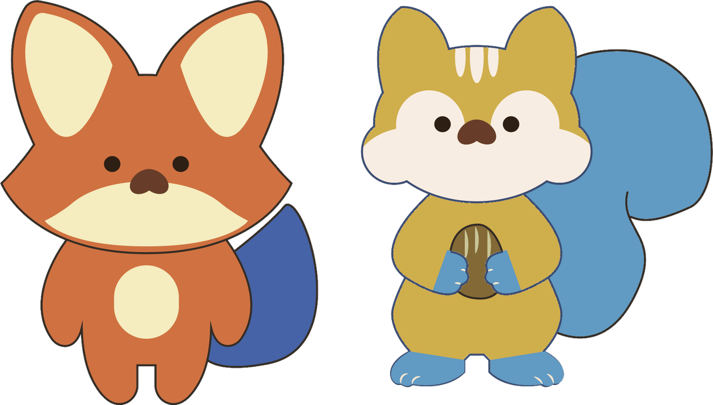
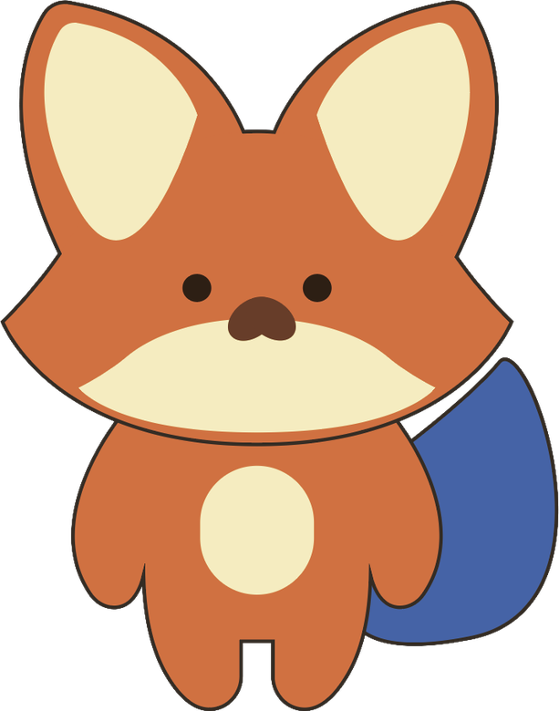
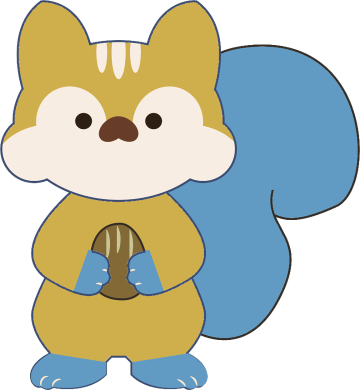
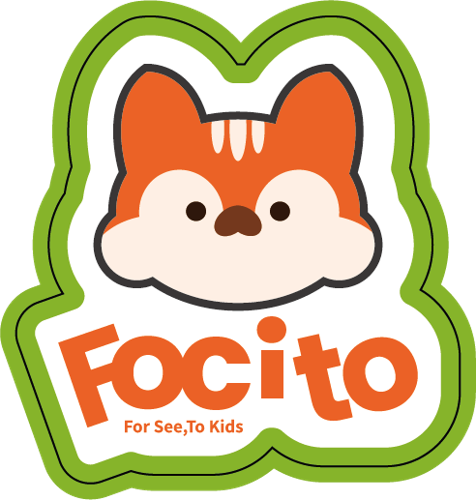

THE BRAND STORY
每個孩子，
都有自己的
探索節奏。
FOCITO 是一棵陪孩子慢慢長大的樹。我們相信，每個孩子都有不同的焦距、節奏與探索方式。有些孩子先用眼睛觀察，有些孩子喜歡用雙手嘗試，有些孩子需要更多時間感受世界。
我們希望透過教具、玩具、活動與服務，把專業的發展教育轉化為孩子願意參與的日常遊戲，也成為父母陪伴孩子成長時的溫柔後盾。
不急著長大，不急著抵達。
從小小的注視開始，看見大大的世界。

FOCITO 是一棵陪孩子慢慢長大的樹。我們相信，每個孩子都有不同的焦距、節奏與探索方式。有些孩子先用眼睛觀察，有些孩子喜歡用雙手嘗試，有些孩子需要更多時間感受世界。
我們希望透過教具、玩具、活動與服務，把專業的發展教育轉化為孩子願意參與的日常遊戲，也成為父母陪伴孩子成長時的溫柔後盾。
不急著長大，不急著抵達。
從小小的注視開始，看見大大的世界。
以設計轉譯，讓教育發芽。
陪孩子以安心、不受壓迫的方式探索世界。
將專業知識轉成孩子願意玩的產品與體驗。
讓遊戲成為支持觀察、手眼協調與感官探索的媒介。
讓陪伴與共同探索自然融入生活。
森林裡目前住著兩位夥伴：狐狸與松鼠。他們不急著替孩子找答案，而是一起觀察、一起嘗試。

代表觀察、專注與好奇。陪孩子慢慢看、慢慢試，發現眼前的小小線索。

象徵動態視覺、距離感、手眼協調、收集與分類。讓探索過程充滿驚喜。
